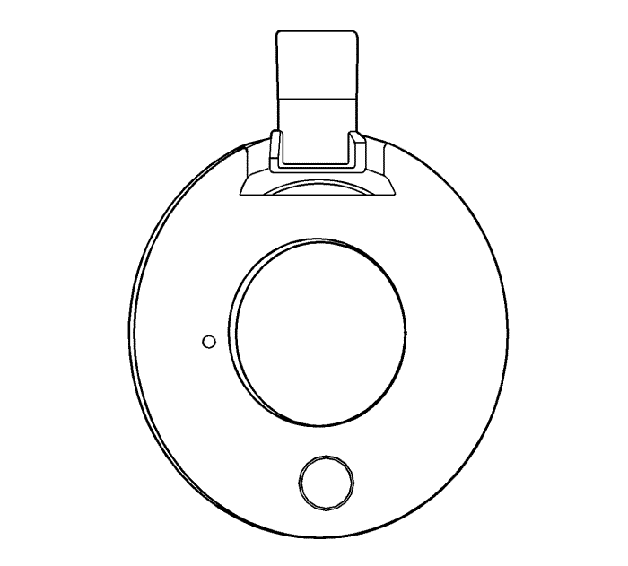
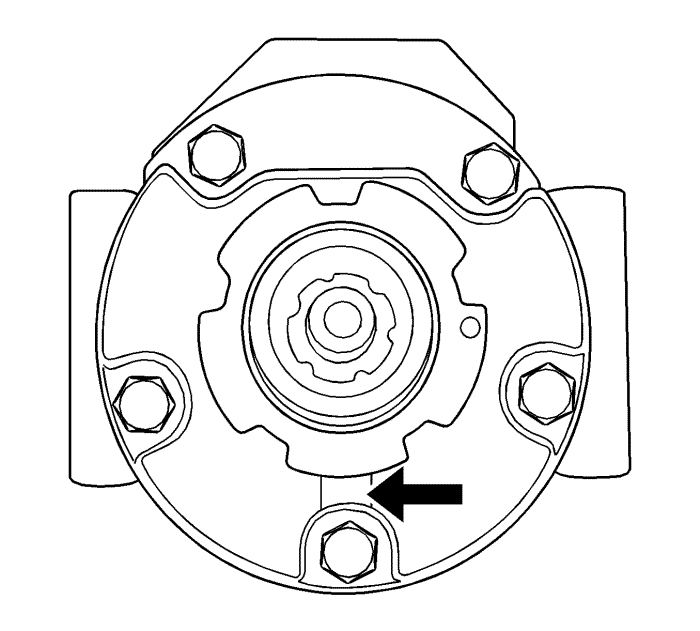
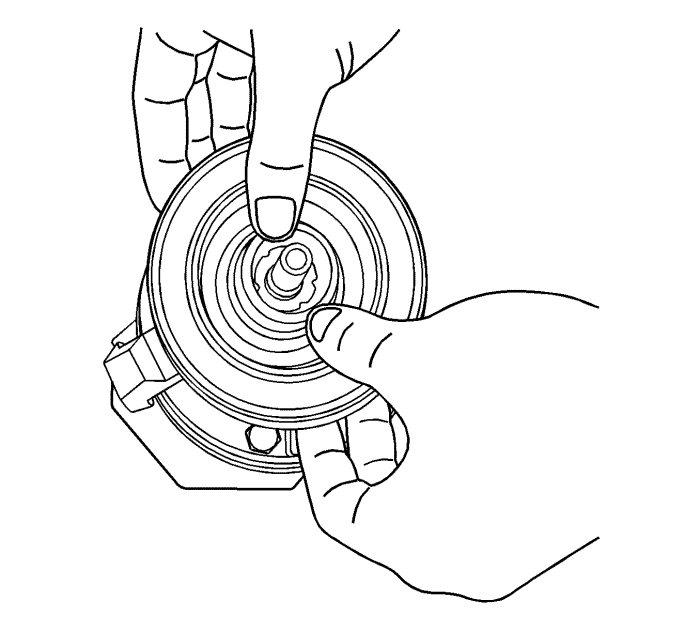
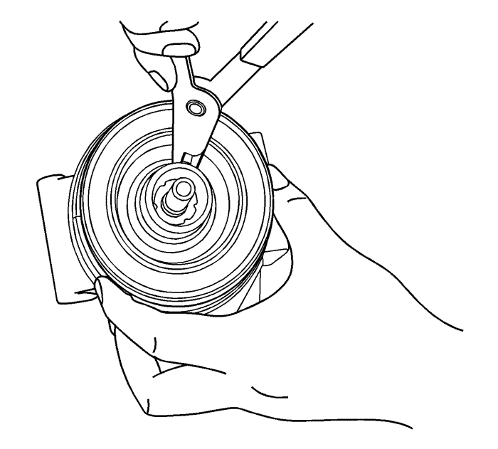

- Antes del montaje, comprobar que el relieve del plato de la bobina está colocado en la ranura de posición del compresor para sujetar la bomba de modo que la bobina no pueda girar.

- El orificio de posición en el plato de la bobina se debe colocar en el pasador de posicionamiento del compresor para asegurar que la bobina no puede girar (solo VM Diesel).

Nota: No es posible encajar el anillo de seguridad si no se sitúa la bobina de forma correcta.
- Montar la bobina del embrague en el compresor.

Nota: Asegurarse de que el lado del borde biselado del anillo de seguridad queda en el lado superior. Tras el montaje, se debe apretar para asegurarse de que el anillo de seguridad se monta correctamente.
- Montar el anillo de seguridad en la bobina del embrague.
- Monte el conjunto de polea y cojinete. Consultar Sustitución del rotor y/o cojinete del embrague .
- Monte el conjunto de accionamiento del embrague. Consultar Sustitución del conjunto del embrague del aire acondicionado .
- Monte el compresor. Consultar Sustitución de compresor de aire acondicionado : Diesel → V6 → 2,4l .
- Conecte el cable negativo de la batería. Consultar Desconexión y conexión del cable de batería negativo .
- Recargar el sistema de A/A. Consultar Recuperación y recarga del agente frigorífico .